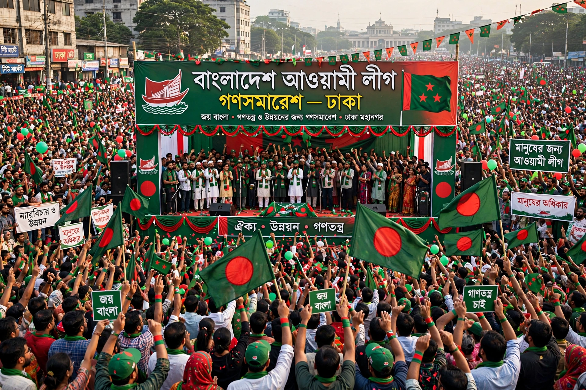

The Bangladesh Awami League is one of the major political parties of Bangladesh, founded in 1949 in Dhaka as the Awami Muslim League. Led for decades by Sheikh Mujibur Rahman, it spearheaded the Bengali language movement, the autonomy struggle, and the 1971 Liberation War that created Bangladesh.

| Awami League | |
|---|---|
| Founded | 23 June 1949 |
| Founder figures | H. S. Suhrawardy, Maulana Bhasani, Sheikh Mujibur Rahman |
| Ideology | Bengali nationalism, secularism, social democracy (historically socialism) |
| Symbol | Boat |
The party won Pakistan's 1970 election outright, but the military regime's refusal to transfer power led to civil war and Bangladeshi independence in 1971. Mujib became the country's first leader; he was assassinated in 1975. His daughter Sheikh Hasina led the party from 1981 and served as prime minister 1996–2001 and 2009–2024, overseeing rapid economic growth but also facing criticism for authoritarianism. In August 2024, mass protests forced Hasina to resign and flee to India; the interim government banned Awami League activities in 2025 pending trials related to the crackdown.
Sheikh Mujibur Rahman · Sheikh Hasina · Bangladesh
Recreated from memory.